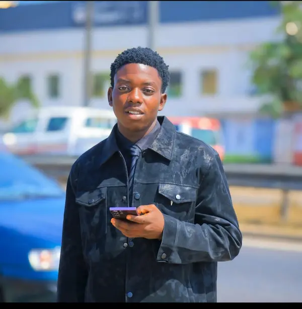

Osamudiamhen Precious Christopher | WDD 130

Christopher Osamudiamhen Precious > An optimistic and disciplined young mind full of potentials. I am a student of BYU-Pathway Worldwide pursing a BSc Degree in Software Development. I have experience in customer support and call center management, with skills in CRM, technical troubleshooting, and IT support. Currently I am building my foundation in web development with HTML, CSS, Python and Git. I always enjoy helping people solve their problems with clear communication. My Skills beyond tech includes Drumming, playing piano, Barbering etc. Hobbies: Exercising, Drumming, Cooking, Solving problem for people, etc.